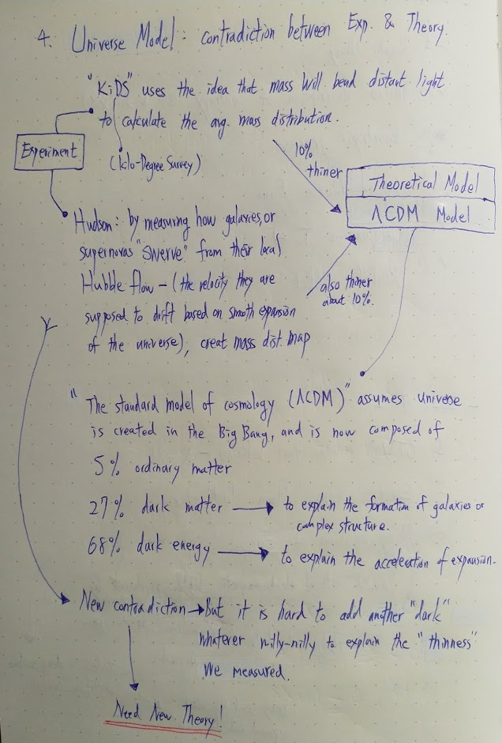

Contradiction of Current Model of Cosmology
Current theoretical standard model is Lambda CDM model. Yet measurements have shown some contradiction associated with mass distribution.
New theory or better measuring techniques should be developed.

Dust Storms on Mars
Dust storms can often grow into massive behemoths that last several weeks, blanketing the entire planet, and cutting off communication.
Emirates Mars mission aims to study the martian atmosphere. (Middle East)
China Yutu-2
Yutu-2 lunar rover found bizzare "gel-like" substance with unusual color at the moon's far side.
A supermassive black hole lit up a collision of two smaller black holes
About 4 billion light-years away, two black holes collided into one other while in the vicinity of a supermassive black hole called J1249+3449.
Accretion disk: a swirl of stars, gas, and dust that is slowly being sucked toward the black hole's event horizon.
When the two black holes collided, the force sent them, now merged as one, hurtling out of the supermassive black hole's accrestion disk. As the merge black hole sped into space, it lit up the surrounding gas in the disk.
How did planet get water?
New: "perhaps" oceans might actually form "inside-out", as internal heating helps release liquid water that's trapped in the deeper layer.
Tra: asteroids deliver water during the early days of a star system.
Moon Dust
NASA: the biggest challenge to lunar operation is the dust. Moon dust is sticky because of its electrostatic charge. When the sun is high and UV radiation is at its peak, the dust is extra charged, and thus extra sticky. When the sun goes down, the dust seems to lose some of its adhesive force.
In Apollo missions, Dust Detector Experiment (DDE): the power drop of the solar cells can measure the accumulation of the moon dust. Designed by O'Brien.
Impact on moon probes: Surveyor 3 bright-white surface had turned a tan color after 2.5 years on moon. Ultrafine moon dust embedded all over the microtexture of the paint. But the quesiton is how did the dust cover the Surveyor 3's surface?
Dust storm theory: During sunrise, moon dust levitates and swirl like a storm.
learn more
Measure the chemical composition of distant stars
From the Feynman Lecture Ch31, the dispersion equation tells us if the light frequency ω is very close to ωk then the resonance term (ω2k−ω2) can become small compared with iγkω and the index becomes almost completely imaginary. The absorption of the light becomes the dominant effect.
This effect gives the dark lines in the spectrum of light which we receive from the sun. The light from the solar surface has passed through the sun’s atmosphere (as well as the earth’s), and the light has been strongly absorbed at the resonant frequencies of the atoms in the solar atmosphere.
The observation of such spectral lines in the sunlight allows us to tell the resonant frequencies of the atoms and hence the chemical composition of the sun’s atmosphere. The same kind of observations tell us about the materials in the stars.
The ring of Fire on Venus
Old: Venus had been inactive.
New: Researchers indentified 37 ring-like volcaniv structures on Venus. They were recently active and are likely still active today.
How: The researchers developed simulations of what the planet’s active coronae should look like based on thermal data collected by the European Space Agency’s Venus Express orbiter. Using these simulations, the researchers had an idea of what surface characteristics to look for to identify active coronae. Specifically, they would have trenches around their outer rings and protuberances around the trenches’ edges. The researchers then looked for these characteristics in infrared images of Venus’s topography.
These coronae are much bigger than anything found on Earth—the largest, Artemis, stretches 1,300 miles in diameter. (The largest active volcano on Earth, Mauna Loa in Hawaii, is just 75 miles in diameter.)
Campfire near Sun's surface
The ESA-led Solar Orbiter released images of campfire from just over 47 million away the Sun (about half the distance from Earth to Sun)
The images show a landscape of constant stormy activity emanating from the sun's corona (atmosphere), revealing features just 250-310 miles across.
This could be the first steps in solving: why the sun's atmosphere (over 1 million C) is so much hotter than its surface (5500 C)